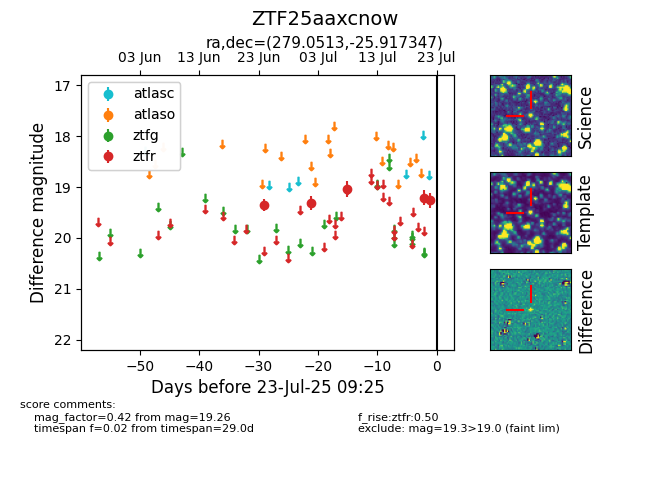

Target ZTF25aaxcnow at 2025-07-23 12:37, see:
FINK: fink-portal.org/ZTF25aaxcnow
Lasair: lasair-ztf.lsst.ac.uk/objects/ZTF25aaxcnow
ALeRCE: alerce.online/object/ZTF25aaxcnow
alt names
ZTF25aaxcnow (ztf,fink)
coordinates:
equatorial (ra, dec) = (279.0513,-25.91735)
galactic (l, b) = (8.0502,-8.40291)
photometry
last ztfr=19.26
5 ztfr detections
